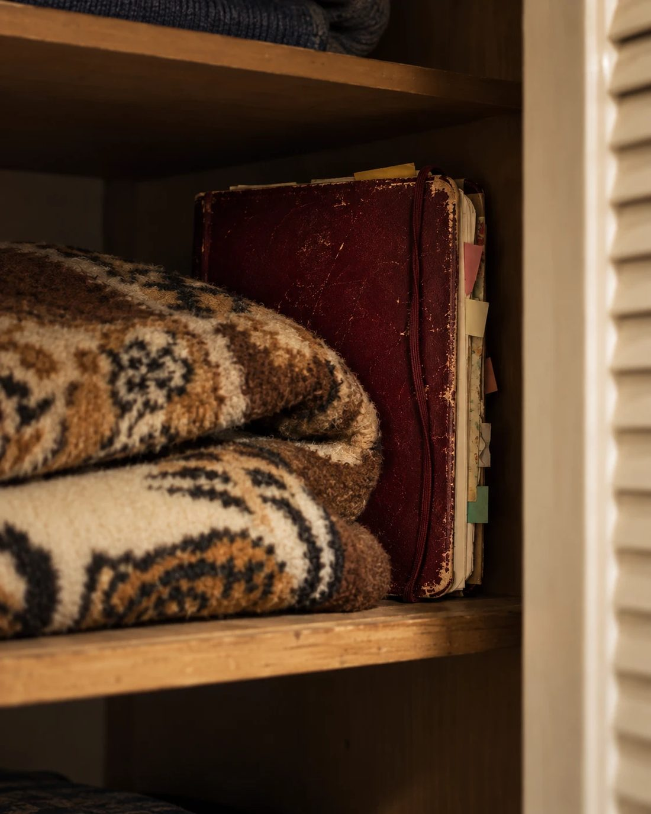
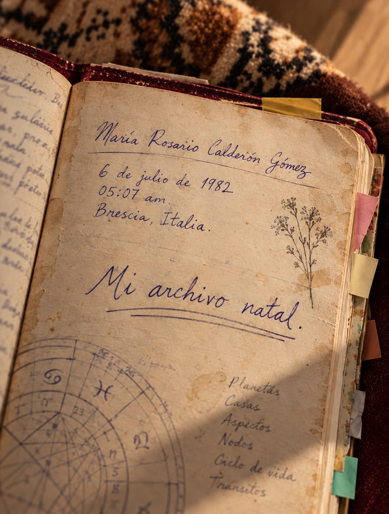
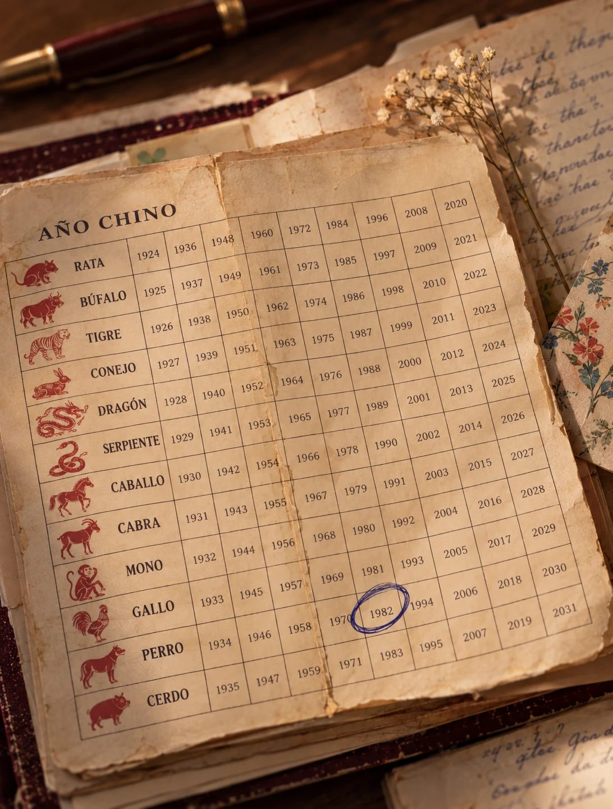
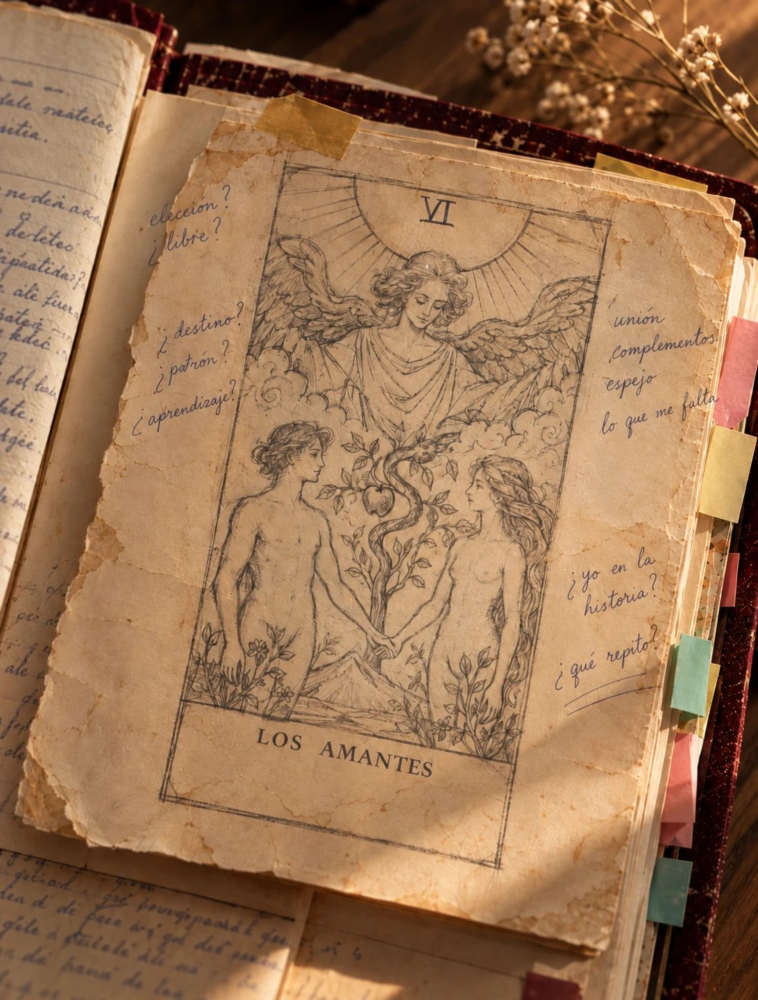

· I ·
El departamento olía a cerrado y a jabones diferentes.
Daniela dejó las dos maletas junto a la puerta y la caja de cartón sobre el sillón, que no era suyo. Nada ahí era suyo: ni el sillón color mostaza, ni la mesa del comedor, ni las cortinas de florecitas que alguien había elegido muchos años atrás seguramente. El anuncio decía "amueblado". No decía "amueblado con un gusto raro".
Era martes, casi las seis. Por la ventana entraba el ruido de la avenida, constante, como una licuadora lejana.
Tenía fecha de entrega el viernes. Un catálogo de cuarenta páginas para una marca de velas aromáticas: fotos de velas, nombres de velas, precios de velas. Le pagaban poco, pero le pagaban.
Sacó la laptop y buscó dónde ponerla.
La mesa tenía un frutero vacío, un mantel de plástico con limones dibujados, una lámpara de pantalla beige y tres portavasos de corcho. Quitó el frutero. Quitó el mantel; abajo había una marca redonda de taza. Movió la lámpara a la esquina. Se sentó. La silla cojeaba. Se cambió a la otra. La luz le daba de frente en la pantalla. Movió la mesa diez centímetros. Ahora la luz le daba en la nuca, pero el enchufe no alcanzaba.
Se quedó viendo la pantalla en negro.
—Ya, Daniela —dijo en voz alta.
Cuando firmó el contrato pensó lo mismo que pensaba en cada mudanza: aquí sí. Lugar nuevo, ahora sí iba a hacer las cosas bien.
Apenas llevaba una hora en el departamento vacío y ya sentía lo de siempre. Si algo no estaba bien, no empezaba sus proyectos. Y casi nunca estaba todo bien.
La lista se la sabía de memoria: tres trabajos en siete años. El curso de lettering que pagó completo y dejó en el módulo cuatro. La cuenta de ilustración con once publicaciones. La tienda de stickers que llegó a tener veintitrés pedidos y que un día, sin razón, ya no quiso abrir. Todo lo había empezado igual: con muchísimas ganas.
Su mamá lo había resuelto hacía años, sin voltear la vista de la estufa:
—Ay, Daniela. Eso es solo falta de disciplina. Siéntate y hazlo.
Su hermana nada más se reía:
—Es que tú te aburres de todo, manita.
Cerró la laptop.
· II ·
Decidió que por lo menos iba a desempacar algo. Empezó por las revistas de diseño que cargaba de mudanza en mudanza.
El clóset del pasillo tenía tres entrepaños. Los dos de abajo estaban vacíos. En el de arriba había una cobija doblada, de esas cafés con un tigre estampado que había en todas las casas de los noventa.
Daniela se subió a la silla que cojeaba —mala idea, lo supo en cuanto subió— y empujó la cobija para hacer espacio.
Atrás había algo que arrastró.
Era un cuaderno grande, de pasta dura, color vino. Tenía las esquinas peladas, como si lo hubieran llevado mucho tiempo en bolsas o mochilas. El elástico ya no cerraba; nada más colgaba. De las orillas salían papelitos, una hoja doblada, tiras de cinta de colores.
Lo sacó con cuidado. Una de las hojas sueltas estuvo a punto de caerse y Daniela la acomodó entre las páginas sin ver qué decía.
Pensó que sería un diario. O un recetario, como el de su abuela, lleno de pasteles que nadie volvió a hacer.
¿Quién deja algo así en un departamento de renta?
Casi lo regresó a su lugar.
Pero lo abrió.

· III ·
En la primera página, con letra cursiva, inclinada, en tinta azul:
María Rosario Calderón Gómez
6 de julio de 1982
05:07 am
Brescia, Italia
Y abajo, con otra tinta, más gruesa, como escrita otro día:
Mi archivo natal.
Daniela se quedó viendo la fecha.
6 de julio.
Ella también había nacido un 6 de julio.
Se rio con la nariz, como dando un soplido. Pasa. Un compañero de la prepa, la señora del banco, algún actor. Uno entre trescientos sesenta y cinco.
Se sentó en el piso del pasillo, con la espalda en la pared.
Antes de pasar la hoja, le escribió a la dueña:
Buenas tardes, señora Leti. Disculpe, encontré un cuaderno en el clóset del pasillo. ¿Es de alguien? Para guardarlo.
El mensaje se quedó con una palomita gris.

· IV ·
Rosario había separado el cuaderno con tiras de cinta de colores pegadas en la orilla de las hojas. Una amarilla, una roja, una verde.
La amarilla decía ZODIACO.
CÁNCER.
Sol en Cáncer. Ascendente en Cáncer.
Daniela no sabía qué era un ascendente. Ella era Cáncer y ya; eso decían los horóscopos que su mamá leía en el periódico.
Abajo había una línea tachada con tanta fuerza que el bolígrafo casi rompía el papel. Todavía se alcanzaba a leer: "sensible = débil". Y encima, con letra más suave:
Mi sensibilidad no es debilidad. Es un instrumento de precisión.
Daniela pasó el dedo por encima de la palabra tachada.
Más abajo, en otra tinta, con fecha:
marzo 2019
La casa primero. Si la casa no está bien, no estoy bien yo.
No es capricho. Es cómo funciono.
Daniela levantó la vista.
Desde el pasillo se veía la mesa del comedor. La lámpara en la esquina. La silla de lado. La laptop cerrada.
Volvió al cuaderno.
La roja decía CHINO.
PERRO DE AGUA · YANG
Mes: Cabra. Hora: Conejo.
Leal hasta cuando no conviene.
Doy segundas oportunidades hasta que duele.
Entre esas hojas había una tabla impresa, doblada en cuatro. De esas que regalan en los restaurantes chinos en año nuevo: roja con dorado, los doce animales en círculo y, debajo de cada uno, sus años. Tenía una mancha de salsa en una esquina.
Alguien había encerrado con pluma azul el 1982, en la columna del Perro.
Daniela buscó su año.
Estaba en la misma columna, justo abajo. 1994.
Nunca había sabido que tenía un animal. Ahí estaba, en una tabla de restaurante, junto al de una desconocida.
Rosario era Cáncer. Ella también.
Rosario era Perro. Ella también.
Daniela cerró el cuaderno un momento. Después de un instante lo volvió a abrir.

· V ·
La verde decía TAROT.
De tarot, Daniela sabía lo de las películas: una señora con pañoleta, una mesa redonda, una carta con un esqueleto.
La página de Rosario no tenía nada de eso. Tenía un dibujo hecho a lápiz, con cuidado: dos figuras de pie y una tercera arriba, con las alas abiertas. Abajo, VI. LOS AMANTES.
Arriba del dibujo, otros nombres tachados:
El Mago
La Emperatriz
La Estrella ?
El Mago estaba tachado una sola vez. La Emperatriz, tantas que casi no se distinguían las letras.
Y luego, con la letra más firme de toda la página:
Los Amantes.
No es de romance. Es de elegir.
enero 2022 — por fin.
Por fin, pensó Daniela. Por fin qué.
Le dio vuelta a la hoja. Atrás no había nada.
Más adelante, suelta entre las hojas, había otra hoja doblada. En el centro, con letra grande:
Mi camino es 11.
Nada más.
Daniela la volvió a doblar como estaba.

· VI ·
El miércoles no abrió la laptop. El jueves tampoco.
Se despertaba, hacía café y se sentaba en el pasillo. El cuaderno estaba lleno de flechas que cruzaban de una página a otra. De notas al margen: "¿por eso?", "preguntarle a alguien que sepa", "no sé si lo estoy calculando bien". Algunas flechas no llegaban a ningún lado.
Las fechas las apuntó en una servilleta, sin saber bien para qué:
marzo 2019.
julio 2020.
enero 2022.
Tres años con el mismo cuaderno. Daniela no recordaba haber durado tres años con nada.
El jueves en la mañana vibró el celular.
Hola Dani!! Cómo vas con el catálogo? 🙂
Tenía seis páginas. De cuarenta.
Ya casi! Mañana te mando avance
Súper, gracias!!
Daniela puso el celular bocabajo.
Se levantó, fue al comedor y abrió la laptop. En la pantalla apareció la portada del catálogo: una vela blanca sobre una mesa de madera. Llevaba días pensando que la foto no combinaba con la tipografía.
Probó otra fuente. La cambió de tamaño. Regresó a la primera.
Volvió a cerrar la laptop.
En el pasillo, el cuaderno seguía abierto donde lo había dejado.
En la tarde contestó por fin la señora Leti:
Ay mija, supongo que era de la señora Rosario, la que vivía ahí antes. Una italiana que llegó aquí de chiquita; ya era más mexicana que el mole. Se fue hace como dos años. Tíralo si quieres 👍
No lo tiró.
· VII ·
Las últimas hojas del cuaderno estaban pegadas. Daniela las separó con la uña.
La última página escrita tenía fecha: agosto 2022. Era una lista, a medias:
Lo que me falta:
— ¿11 de qué?
— lo de la Luna
—
Y después del tercer guion, nada.
Daniela pasó las hojas en blanco una por una, hasta la contraportada, como si fuera a aparecer algo.
No apareció nada.
Volvió a la lista. Años llenando un cuaderno, y terminaba así: tres renglones y uno vacío.
Se quedó con el cuaderno abierto en las rodillas. Afuera pasó una ambulancia.
¿Lo habría terminado en otro cuaderno? ¿Habría encontrado lo que le faltaba?
Miró la servilleta con las fechas. Desde ahí se alcanzaba a ver la laptop cerrada en el comedor. Pensó en sus plumones de lettering, que no habían salido de su estuche desde la mudanza anterior.
Rosario había dejado un cuaderno sin terminar.
Ella tenía varios.
Y luego, sin querer, la pregunta se le volteó.
¿Y yo?
· VIII ·
Esa noche no podía dormir. A las once abrió la laptop. No para el catálogo.
Escribió:
qué significa ser cáncer y perro
Abrió una página. Un horóscopo semanal le dijo que esa semana iba a recibir un dinero inesperado. Abrió otra: el Perro se llevaba fatal con el Dragón. Otra: "Los 5 signos más leales del zodiaco", con un gif de un perrito.
En un artículo larguísimo leyó que había perros de Agua, de Madera, de Fuego, de Tierra y de Metal. Rosario era de Agua. Cuál era el suyo, el artículo no lo decía claro.
Leyó un rato. Algunas cosas le quedaban. Otras no tanto.
Luego escribió: "qué es ascendente".
Una página lo explicaba. Para calcularlo, decía, necesitas tu hora exacta de nacimiento.
Daniela no tenía idea.
Le marcó a su mamá.
—¿Bueno? ¿Dani? ¿Qué pasó? —contestó con voz de dormida.
—Nada, ma, todo bien. Perdón por la hora.
—Ay, me espantaste. ¿Ya te instalaste? ¿Estás comiendo?
—Sí, sí. Oye, ¿a qué hora nací?
—¿Cómo que a qué hora naciste?
—La hora. ¿Te acuerdas?
—Pues claro que me acuerdo. A las cinco y veinte de la tarde. Estaba cayendo un aguacero y tu papá no encontraba dónde estacionarse. Cuando llegó, ya habías nacido. ¿Para qué quieres saber eso a estas horas?
—Nomás.
—Tú y tus cosas. Ya duérmete.
Colgó y siguió buscando. Para la medianoche tenía once pestañas abiertas.
En una de ellas, el título decía: Mapa de Identidad Natal.
· IX ·
La página hablaba de siete sistemas.
Daniela los leyó despacio, como quien lee la lista de invitados de una fiesta para ver a quién conoce.
Zodiaco occidental. Horóscopo chino. Tarot. Las tres pestañas de colores del cuaderno.
Numerología. ¡Ah, caray!
Y tres que no había oído nunca: Tzolkin. Tonalpohualli. Ángel cabalístico.
Decía que los siete se leían juntos, conectados entre sí, en una sola lectura. Pedían nombre completo, fecha, hora y ciudad. Llegaba al correo unos minutos después de pagar.
Daniela miró el cuaderno. Las tachaduras. Las flechas que intentaban unir una sección con otra y no llegaban a ningún lado. La lista que se quedó en el tercer guion.
Luego miró la pantalla.
Rosario tardó años.
No quería el mapa de Rosario. Quería el suyo.
Quería saber si de verdad estaba rota.
· X ·
Hizo clic.
Escribió su nombre completo: Daniela Sofía Herrera Lomelí. Hacía mucho que no lo escribía entero.
Fecha de nacimiento: 6 de julio de 1994.
Hora: 17:20.
Ciudad: Ciudad de México.
Pagó.
En la pantalla apareció un mensaje: "Revisa tu correo".
Se levantó del piso. Le dolían las rodillas. Fue a la mesa del comedor, la que no había podido usar, y puso el cuaderno de Rosario en el centro. Era lo único que había sobre la mesa.
Abrió su correo.
Actualizó.
Nada todavía.
Actualizó otra vez.